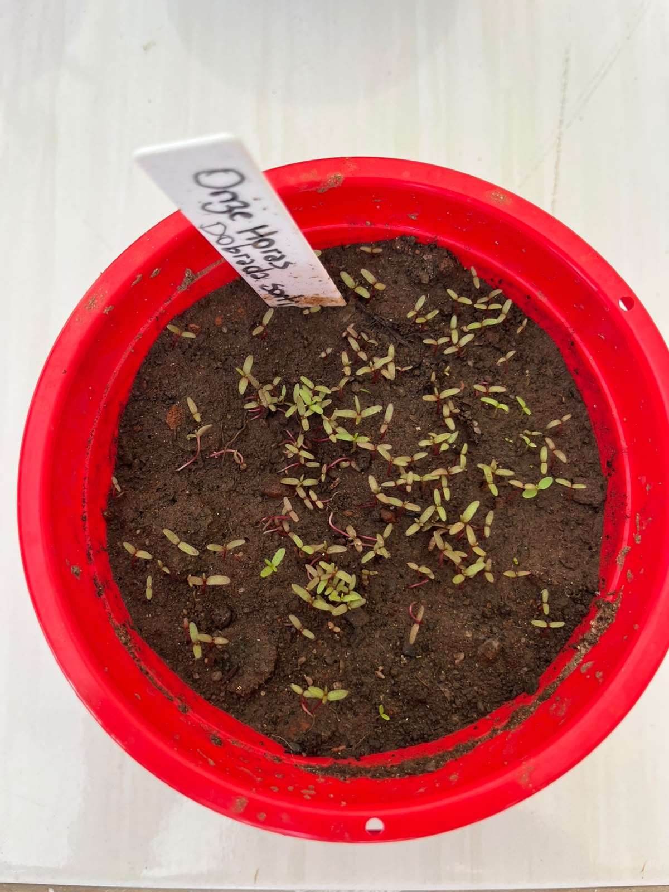

🌺 Identificação da Planta
Nome científico: Portulaca grandiflora
Família botânica: Portulacaceae
Origem: América do Sul
Tipo de planta: Ornamental
Vaso na Horta Escolar Viva: 🔴 Vermelho
🌿 Características
A Onze Horas é uma planta ornamental conhecida por suas flores coloridas e delicadas. Recebe esse nome porque suas flores costumam se abrir com maior intensidade próximo ao horário de maior presença do sol.
É uma planta resistente, alegre e muito utilizada em jardins, vasos e projetos de educação ambiental.
☀️ Como Cultivar
- ☀️ Prefere locais com bastante luz solar.
- 💧 Necessita de pouca água e não gosta de solo encharcado.
- 🌱 Desenvolve-se melhor em solo leve e bem drenado.
- 🌿 É uma ótima opção para jardins sustentáveis.
🐝 Importância para a Biodiversidade
Suas flores coloridas podem atrair pequenos polinizadores, como abelhas e borboletas, contribuindo para um ambiente mais equilibrado.
Na Horta Escolar Viva, representa a beleza da diversidade das flores e a importância do cuidado com a natureza.
🌼 Você Sabia?
A Onze Horas abre suas flores principalmente durante o dia, quando recebe maior quantidade de luz solar, formando um lindo espetáculo de cores no jardim.
📱 Conheça mais sobre a Onze Horas
Aponte a câmera do celular para o QR Code e descubra mais informações sobre esta flor.